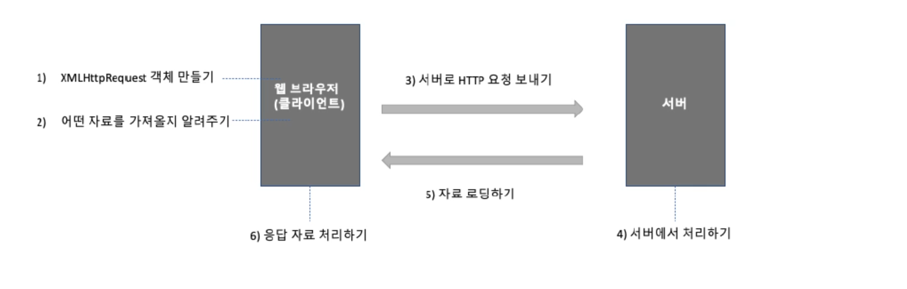

Chapter 12
Chapter 12 summary
HTTP/HTTPS
JSON
HTTP란
클라이언트와 서버 간에 자료를 주고받으려면 미리 약속된 규칙이 필요하다.
이것을 프로토콜(protocol)이라고 하고, 웹에서는 HTTP (HyperText Transfer Protocol)라는 프로토콜을 사용한다.
클라이언트에서 서버로 자료 요청하는 것은 HTTP 요청 (HTTP request),
서버에서 응답해서 클라이언트로 자료를 보내는 것은 HTTP 응답 (HTTP response)이라고 한다.
[HTTP 통신 흐름]
웹 브라우저 (클라이언트) → HTTP 요청 → 서버
서버 → HTTP 응답 → 웹 브라우저 (클라이언트)
요청 헤더와 응답 헤더

클라이언트에서 사이트 주소를 입력하고 [Enter]를 누를 때
사이트 주소뿐만 아니라 사용 중인 시스템 정보와 웹 브라우저 정보, 사용한 언어 등 다양한 정보까지 함께 전송된다. → 서버로 요청할 때 보내는 헤더를 ‘요청 헤더(request header)’라고 한다.
서버에서 입력한 사이트를 찾아서 클라이언트로 보낼 때
응답 메시지를 보내는 시간, 메시지를 클라이언트에 어떻게 표시할지 등의 정보는 ‘응답 헤더(response header)’에 담기고
이미지나 텍스트 같은 실제 사이트 내용은 ‘응답 본문(response body)’에 담겨서 전달된다.
요청 헤더 예시
요청 헤더(Request Header)
웹 브라우저(클라이언트)에서 서버에 요청을 보낼 때 함께 전송되는 정보들이다. 예를 들어 위 이미지처럼:
요청 메서드(Method): GET
요청 URL: https://www.google.com/
요청 헤더 항목들: host, user-agent, accept, cookie 등
이런 헤더 정보는 서버가 어떤 데이터를, 어떤 형식으로 반환할지 판단하는 데 사용된다.
POST 방식
POST를 사용하면 요청 내용이 주소에 드러나지 않고 요청 본문(request body)에 따로 담아서 보낸다.
예) 로그인 창에 아이디와 비밀번호를 입력한 후 [로그인] 버튼을 클릭하면,
사용자가 입력한 아이디나 비밀번호는 네트워크 외부에서 알아볼 수 없도록 요청 본문에 담아서 서버로 넘겨진다.
응답 상태

클라이언트의 요청을 받은 서버가 필요한 작업을 처리하고 그 결과를 클라이언트로 보낼 때
서버로 요청한 것이 성공적으로 처리되었는지, 또는 요청한 파일이 없어서 실패했는지 등을 응답 상태를 ‘상태’ 칼럼에 숫자로 표시한다.
서버에서 자료를 받아 프로그래밍할 때는 응답 상태를 확인한 후 진행한다.
| 상태 |
메시지 |
기능 |
| 2XX |
|
자료 요청을 수락했거나 자료 전송이 성공적으로 끝났습니다 |
| 200 |
OK |
서버에서 클라이언트로 성공적으로 전송했습니다. |
| 202 |
Accepted |
서버에서 클라이언트 요청을 수락했습니다. |
| 4XX |
|
클라이언트에서 주소를 잘못 입력했거나 요청이 잘못되었습니다. |
| 400 |
Bad Request |
요청을 실패했습니다. |
| 401 |
Unauthorized |
권한이 없어 거절되었습니다. 인증 가능합니다. |
| 403 |
Forbidden |
권한이 없어 거절되었습니다. 인증을 시도해도 계속 거절됩니다. |
| 404 |
Not Found |
문서를 찾을 수 없습니다. |
| 408 |
Request Timeout |
요청 시간이 초과되었습니다. |
| 5XX |
|
서버 측의 오류로 처리할 수 없습니다 |
| 500 |
Internal Server Error |
서버 내부에 오류가 발생했습니다. |
| 503 |
Service Unavailable |
요청한 서비스를 이용할 수 없습니다. |
JSON
데이터 교환 방식
서버와 클라이언트 간에 자료를 주고받기 위해 양쪽 모두 이해할 수 있는 형식을 사용해야 한다.
XML은 컴퓨터에서 처리하는 모든 문서의 표준 형식이기 때문에 웹에서 사용 가능
최근에는 JSON이라는 형식을 더 많이 사용한다
JSON의 특징
텍스트로만 구성되어 있기 때문에 서버와 클라이언트 사이에 주고받을 때 전송 속도가 아주 빠르다.
JSON은 프로그래밍 언어나 플랫폼에 대해 독립적이기 때문에 C++이나 자바, 자바스크립트, 파이썬 등 많은 언어에서 사용할 수 있다.
자바스크립트 사용자라면 누구나 알고 있는 표기법을 사용하기 때문에 읽기도 쉽고 필요에 따라 자바스크립트 객체로 변환하기도 쉽다.
JSON의 형식
중괄호 { } 사이에 ‘이름’과 ‘값’으로 구성된다.
JSON에서는 ‘이름’ 부분에 반드시 큰따옴표를 붙이는 것이 큰 차이점
예) ‘도레미’라는 학생의 수업 신청 정보
객체
{
name : "도레미",
major : "컴퓨터 공학",
grade : 2
}
JSON
{
"name" : "도레미",
"major" : "컴퓨터 공학",
"grade" : 2
}
‘{ "name" : "도레미", "major" : "컴퓨터 공학", "grade" : 2 }’
JSON의 ‘이름’
반드시 큰따옴표(")로 묶어야 한다.
‘이름’에 작은따옴표를 사용하거나 큰따옴표가 없는 이름은 사용할 수 없습니다.
맞게 사용한 예
{ "name" : "도레미" }
잘못 사용한 예
{ 'name': "도레미" }
{ name : "도레미" }
JSON 이름에는 공백(space)이나 하이픈(-), 언더바(_)를 함께 사용할 수 있다.
문법적으로 다음 형식도 가능
{ "full name" : "도레미" }
{ "full-name" : "도레미" }
하지만 이름에 공백이나 하이픈이 있을 경우 프로그램을 통해 그 이름에 접근할 때 쉽지 않기 때문에 둘 이상의 단어로 된 이름을 사용한다면 언더스코어(_)를 사용하는 것이 좋다.
{ "full_name" : "도레미" }
JSON의 ‘값’
객체에서는 ‘값’ 부분에 함수(메서드)도 사용할 수 있지만
JSON의 ‘값’에는 숫자, 문자열, boolean, null, 배열만 사용할 수 있고, 함수는 사용할 수 없다.
숫자형: JSON에서는 정수와 실수 모두 사용할 수 있지만, 8진수나 16진수를 사용한 표기법은 지원하지 않는다.
문자열: JSON 문자열은 항상 큰따옴표(" ")로 묶어야 한다.
논릿값과 null: true/false 값을 가지는 논리형을 사용할 수도 있고 null 유형도 사용할 수 있다.
문자열, 배열: 문자열이나 배열을 값으로 사용할 수 있다. JSON 문자열 안에 또다른 JSON 문자열을 넣을 수도 있다. JSON에서 배열을 사용할 때에도 일반 배열과 마찬가지로 대괄호([ ])를 사용한다.
JSON 문자열
JSON 문자열 안에 또 다른 JSON 문자열을 지정할 수 있다.
예) 신청한 과목의 이름과 주당 시간을 새로운 JSON 문자열로 사용
{
"name" : "도레미",
"major" : "컴퓨터 공학",
"grade" : 2,
"course" : {
"title" : "웹 기초",
"timePerWeek" : 3
}
}
객체를 JSON 형식으로 변환하기
클라이언트에서 정보를 처리할 때는 객체를 사용한다.
객체를 JSON 형식으로 저장하거나, JSON 형식을 요구하는 서버로 넘기려면
→ 객체를 JSON 형식으로 변환해야 한다. 직렬화(stringify)라고 한다.
JSON.stringify(객체)
let student = {name:"도레미", major:"컴퓨터 공학", grade:2}
let json = JSON.stringify(student)
일반적인 서버와 클라이언트의 통신
1) 웹 브라우저 화면에 ‘www.daum.net’을 입력하고 [Enter]를 누르면 인터넷 회선을 통해 서버 컴퓨터로 접속한다.
2) 서버 컴퓨터에서 해당 페이지를 찾아낸 후 내용을 다운로드해서 웹 브라우저 화면에 보여준다.
3) 메뉴 중에서 '게임'을 클릭하면 현재 화면이 완전히 사라지고 게임과 관련된 페이지로 이동한다.
메뉴나 링크를 클릭하면 현재 페이지를 완전히 지우고 새로운 화면을 가져와 보여주는 방식
비동기적으로 통신한다면
페이스북이나 트위터 같은 SNS 사이트를 사용할 때에도 화면을 스크롤하면 사이트 전체가 새로 로딩되는 것이 아니라
기존 내용은 그대로 둔 상태에서 다음 내용만 가져와서 보여준다..
이렇게 웹 문서 전체를 다시 불러오지 않고 일부분만 가져와 실행할 수 있는 것은
AJAX(Asynchronous Javascript And XML) 기능 때문
XMLHttpRequest 객체
웹 브라우저에서 서버로 데이터를 요청하고 서버에서 자료를 받아올 때는 HTTP 통신이 가능한 XMLHttpRequest 객체를 사용한다.
XMLHttpRequest 객체의 프로퍼티와 메서드를 사용해서 자료를 주고받거나 상태를 체크한다.
웹 페이지 전체가 아니라 필요한 부분만 자료만 가져올 수 있다.
XMLHttpRequest
‘XML’이라는 자료를
‘HTTP’ 프로토콜을 사용해서
‘Request(요청)’한다
XMLHttpRequest 객체 만들기
new 예약어를 사용해서 XMLHttpRequest 객체의 인스턴스를 만든다.
new XMLHttpRequest()
인스턴스는 xhr이라는 이름을 많이 사용한다.
let xhr = new XMLHttpRequest()
XMLHttpRequest 객체를 만들면 서버로 자료를 요청하고 자료를 받아올 수 있다.
